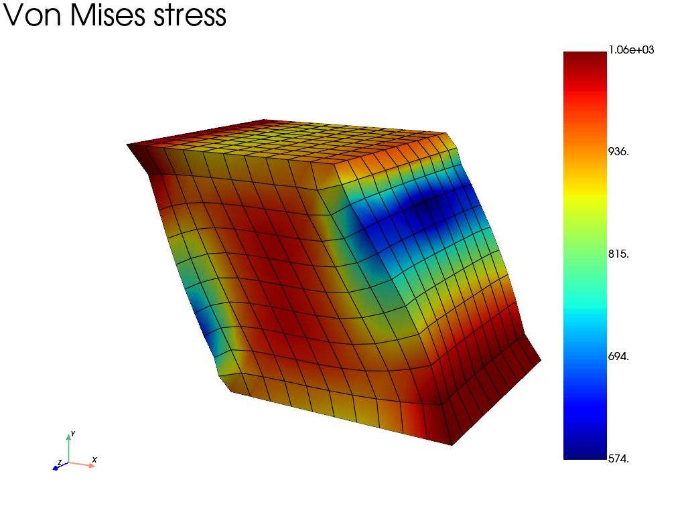
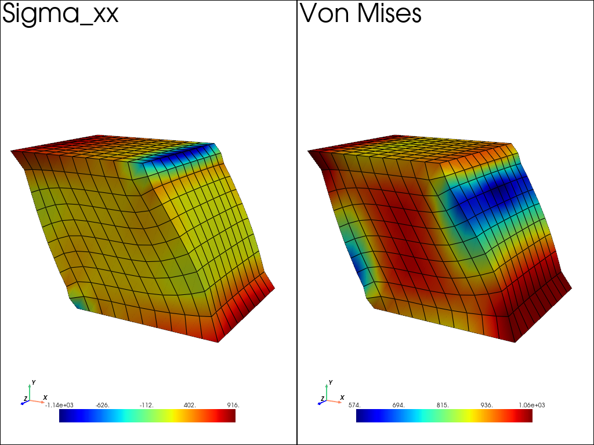
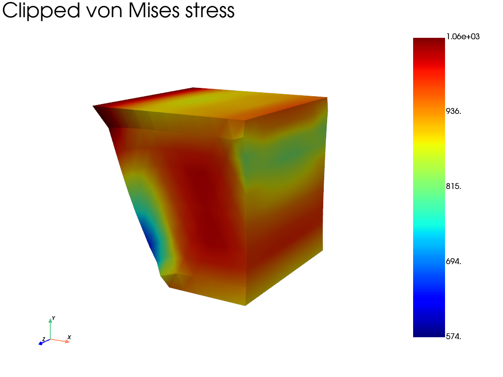
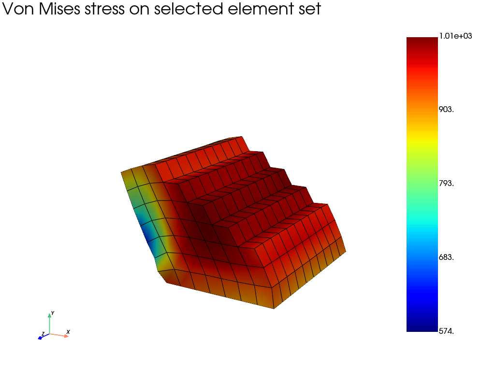
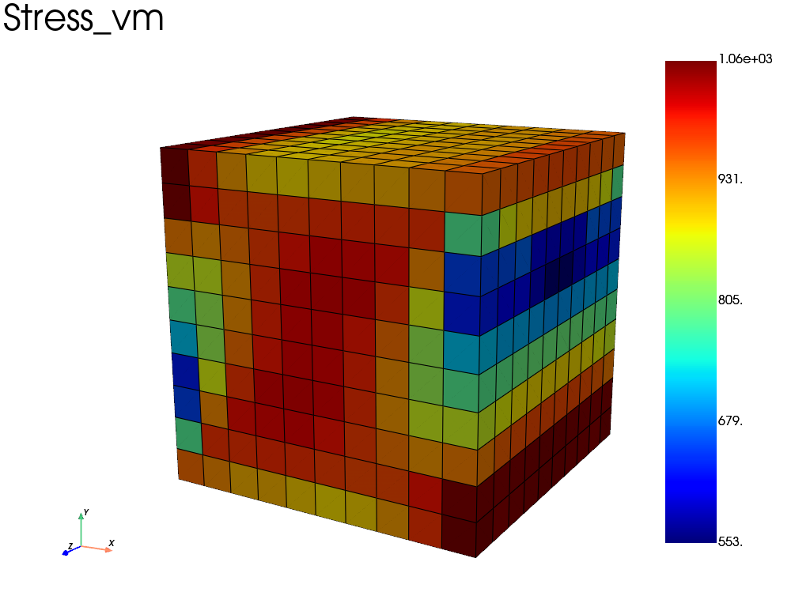
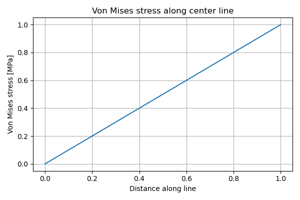
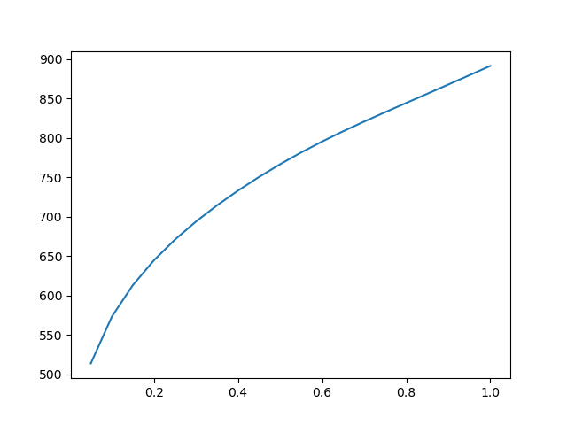

Note
Go to the end to download the full example code.
Visualization tutoral - Shear test of a cube
This example performs a displacement-driven shear test on a unit cube using a finite-strain formulation. Several post-processing and visualization options are demonstrated, including:
Scalar field visualization (von Mises stress)
Side-by-side linked views
Clipping with a plane
Element-set filtering from arbitrary expressions
Sampling and plotting results along a line
Plotting the time evoluation of a field value.
import fedoo as fd
import numpy as np
import pyvista as pv
import matplotlib.pyplot as plt
fd.get_config()["USE_PYVISTA_QT"] = False # avoid rendering useless plot
Geometry and mesh
A regular hexahedral mesh of a unit cube is generated.
fd.ModelingSpace("3D")
# Hexahedral regular mesh of an unit cube
mesh = fd.mesh.box_mesh(
nx=11,
ny=11,
nz=11, # adjust for finer/coarser runs
x_min=0,
x_max=1,
y_min=0,
y_max=1,
elm_type="hex8",
)
Constitutive law and weak form
Elasto-plastic constitutive law with power-law hardening, solved using a finite-strain formulation.
props = np.array(
[
200e3, # Young modulus [MPa]
0.3, # Poisson ratio
1e-5, # thermal expansion coefficient (unused here)
300.0, # yield stress
1000.0, # hardening coefficient
0.3, # hardening exponent
]
)
material = fd.constitutivelaw.Simcoon("EPICP", props)
wf = fd.weakform.StressEquilibriumRI(material, nlgeom="UL")
assembly = fd.Assembly.create(wf, mesh)
Problem definition
Nonlinear static problem with displacement-controlled loading.
pb = fd.problem.NonLinear(assembly)
results = pb.add_output(
"shear.fdz",
assembly,
["Disp", "Stress", "Strain", "P", "Fext"],
)
Boundary conditions
The bottom face is fixed. A horizontal displacement is imposed on the top face to create shear.
nodes_bottom = mesh.find_nodes("Y", 0.0)
nodes_top = mesh.find_nodes("Y", 1.0)
pb.bc.add("Dirichlet", nodes_bottom, "Disp", 0.0)
pb.bc.add("Dirichlet", nodes_top, ["DispY", "DispZ"], [0.0, 0.0])
pb.bc.add("Dirichlet", nodes_top, "DispX", -0.5)
Dirichlet boundary condition:
var = 'DispX'
n_nodes = 121
value = -0.5
Solve the problem
pb.nlsolve(dt=0.05, tmax=1.0, update_dt=True, interval_output=0.05, print_info=0)
Basic visualization: von Mises stress
Plot the von Mises stress on the deformed mesh.
res_plot = results.plot(
field="Stress",
component="vm",
data_type="Node",
show_edges=True,
title="Von Mises stress",
)

Side-by-side linked views
Compare σ_xx and von Mises stress using linked cameras.
pl = pv.Plotter(shape=(1, 2))
pl.subplot(0, 0)
results.plot(
"Stress",
"XX",
"Node",
plotter=pl,
show=False,
multiplot=True,
title="Sigma_xx",
)
pl.camera.view_angle = 40.0
pl.subplot(0, 1)
results.plot(
"Stress",
"vm",
"Node",
plotter=pl,
show=False,
multiplot=True,
title="Von Mises",
)
pl.link_views() # use same view angle for both subplots
pl.show()

Clipping with a plane
Clip the mesh using a plane normal to the X direction.
clip_args = dict(
normal=(1.0, 0.0, 0.0),
origin=(0.5, 0.5, 0.5),
)
pl = results.plot(
"Stress",
"vm",
"Node",
clip_args=clip_args,
show_edges=False,
title="Clipped von Mises stress",
)

Element-set filtering from an expression
Select elements inside a cylindrical region defined by X² + Y² < 0.25. The element selection is based on element center coordinates.
element_ids = mesh.find_elements("X**2 + Y**2 < 0.5")
pl = results.plot(
"Stress",
"vm",
"Node",
element_set=element_ids,
title="Von Mises stress on selected element set",
)

Sampling results along a line
Extract the von Mises stress along a line passing through the cube center.
pl = results.plot(
"Stress",
"vm",
# "Node", # uncomment to avarage results at nodes
scale=0,
show=False, # just used to build the mesh here
)
pv_mesh = pl.actors["data1"].mapper.dataset # extract the mesh
profile = pv_mesh.sample_over_line(
(0.0, 0.5, 0.5),
(1.0, 0.5, 0.5),
resolution=200,
)
distance_key = "Distance" if "Distance" in profile.point_data else "arc_length"
vm_key = profile.active_scalars_name
plt.figure(figsize=(6, 4))
plt.plot(profile.point_data[distance_key], profile.point_data[vm_key])
plt.xlabel("Distance along line")
plt.ylabel("Von Mises stress [MPa]")
plt.title("Von Mises stress along center line")
plt.grid(True)
plt.tight_layout()
plt.show()


History plot at selected nodes
When results are written at multiple time steps, the result object is a
MultiFrameDataSet. History plots can be generated directly using
the plot_history method.
# Select a node at the center of the top face
center_node = mesh.nearest_node([0.5, 1, 0.5])
# Plot the von Mises stress history at this node
results.plot_history(
field="Stress",
indices=center_node,
component="vm",
data_type="Node",
)

Total running time of the script: (0 minutes 19.839 seconds)